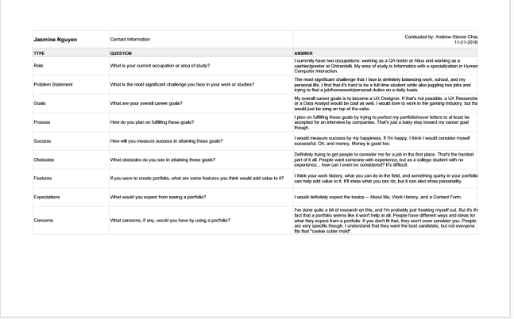
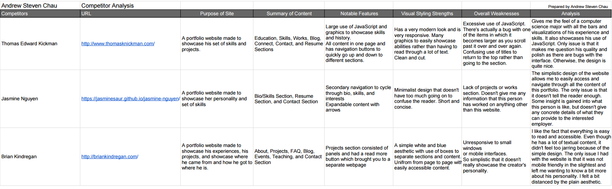
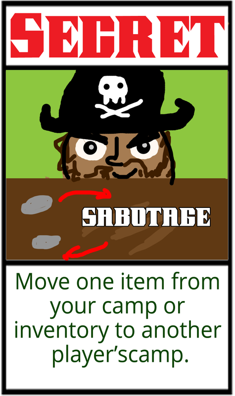
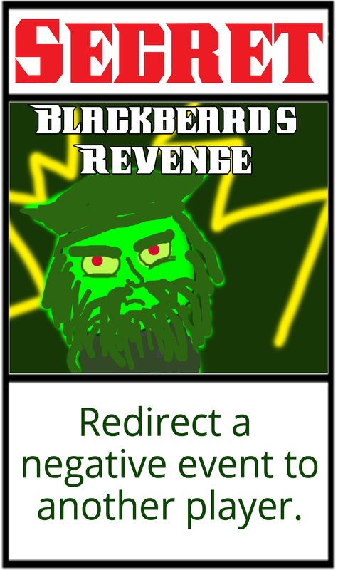
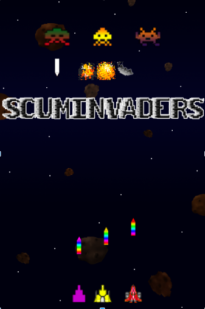
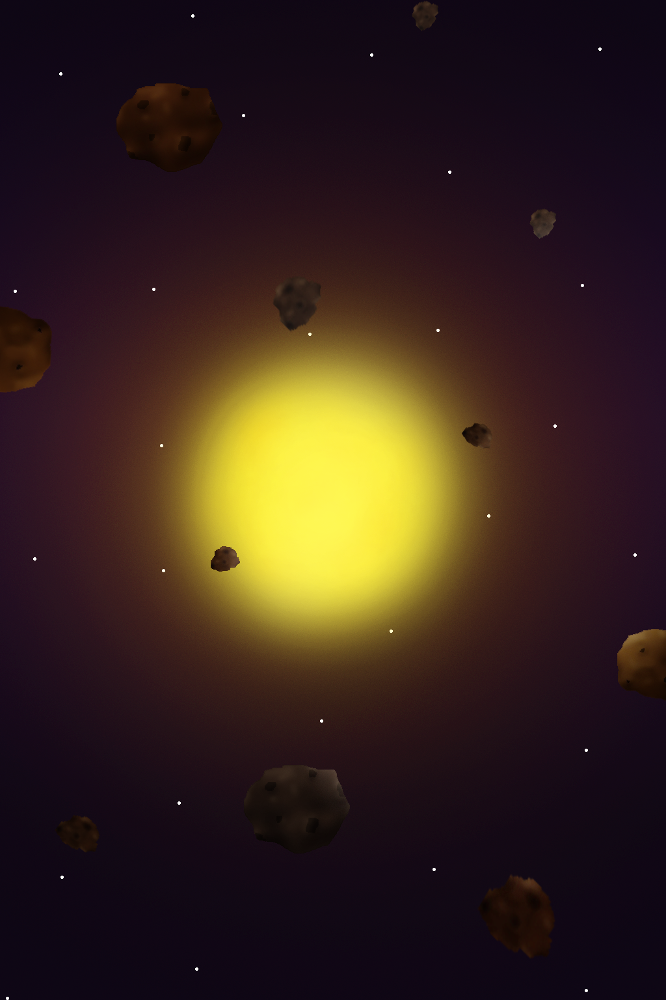

Projects
Monochrome Memories (Current)


- Team Roster:
- Andrew Steven Chau - Project Manager/Lead Programmer
- Elaine Chieng - Artist/Designer
- Tiffany Lam - Designer/Programmer
- Jessica Lim - Sound
- Description:
- Current project for my senior capstone course at the University of California, Irvine.
A puzzle platformer game that incoporates cards to interact with objects in the environment.
Website Portfolio (Nov 2016)
- User Research
- User Interviews:
- 
User interviews are important in order to to get a gauge of what people expect out of your product. It helps to interview a variety of stakeholders to get different viewpoints and to make sure you don't miss out on any possible users. Types of questions should concern both short and long term goals to understand what exactly they expect out of your project. I ended up interviewing 3 other students at UCI in order to see where their goals aligned compared to mine and to get an insight as to what I should put onto my portfolio.
- Competitor Analysis:
- 
It is extremely important to do a competitor analysis, especially for a portfolio, because the entire goal is to try to stand out and be better than the rest. It is an evaluation to see what competitors are doing, how they're doing it, and what's working versus what's not working. I chose
- Feature Value Matrix:
- Feature Prioritization:
- User Testing
- User Stories:
- Cognitive Walkthrough:
- User Test:
- Summary of Findings
- Incorporation of Findings
Scallywags (May 2016)
 - Team Roster:
- Andrew Steven Chau - Project Manager/Designer
- John Francis Collins III - Designer/Artist
- Andres Jr. Gonzalez - Designer/Artist
- Zhengyuan Huang - Tester
- Kinsey Rose Lynaugh - Designer/Artist
- Bingchen Yu - Tester
- Description:
- You are a pirate and your ship has crashed! The remaining crew suspects the captain has met with Davy Jones at the bottom of the sea. A new captain must be elected. You know that if you impress your fellow crew mates then surely they will vote for you as the new captain! Play with up to three other scallywags to decide which one of you is worthy to be the next captain of the ship!
Spooky Spoils (April 2016)
- Team Roster:
- Andrew Steven Chau - Project Manager/Designer/Programmer
- Edwin Andrew Ho - Lead Programmer/Designer
- Harvey Limbo - Sound/Artist
- Shaun Reid - Writer
- Wesley Tseng - Artist
Made with Unity using C#.
Incorporates eye tracking software and hardware: Tobii EyeX.
- Description:
- A game in which the player has to use their eyes to interact with the environment to solve puzzles.
Play as a dashing young explorer hoping to obtain treasure from a haunted house.
Awards:- "Best Game Design" - VGDC 2016 Spring Game Jam
- "Award for Creativity" - 2016 IEEE Gamesig
- Links:
Currently unavailable at this time.
ScumInvaders (March 2016)
 - Team Roster:
- Andrew Steven Chau - Project Manager/Lead Programmer
- Elaine Chieng - Artist
- Tiffany Lam - Designer/Programmer
- Jessica Lim - Sound
- Monami Yang - Artist/Programmer
Made with Python using Pygame.- Uses TCP networking and sqlite3.
- Description:
- A bullet hell style game using the basic mechanics from Space Invaders.
Networked multiplayer game with a lobby system. Up to four players per room.
Going Home (Jan 2015)
- Team Roster:
- Andrew Steven Chau - Project Manager/Designer/Programmer
- Max R. Chung - Artist/Sound/Programmer/Designer
- Khai Nguyen - Programmer
- Faye Yueh Jao - Programmer
Made with Python using Pygame.
- Description:
- A side view strategy resource game similar in design to FTL: Faster Than Light.
- Try to make it home with your solar powered ship without being destroyed by tentacles.
Left To Die (Jan 2015)
- Team Roster:
- Andrew Steven Chau - Designer/Programmer
- Max R. Chung - Project Manager/Programmer/Artist
- Kinsey Lynaugh - Programmer/Designer
- Hector Martinez - Programmer
Made with Python using Pygame.
- Description:
- A puzzle platformer in which the player has to switch between two inverted worlds in order to make it to the end.
When switching worlds, every regular block becomes a spike block and every spike block and regular block.- Players' scores are determined by how many lives they have at the end of the game.
Awards:- 2nd Place - VGDC 2015 Winter Game Jam